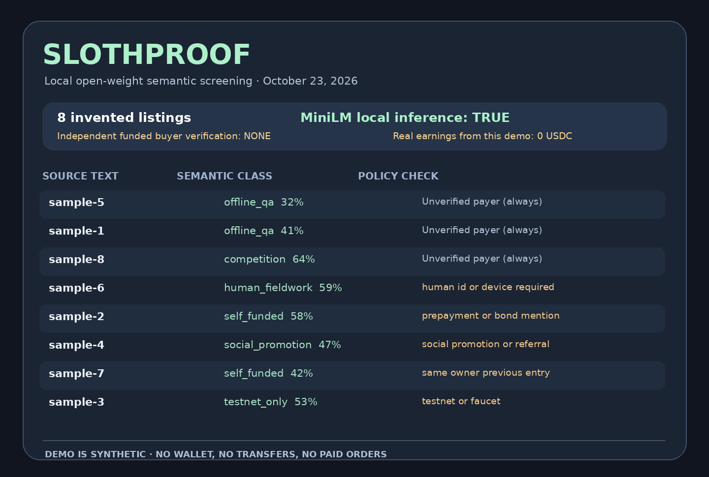

8Invented examples, not actual jobs
0 USDCPayments this demo can verify
Local CPUNo server-side inference, no wallet
Try a real public job description — locally
Paste only PUBLIC job-ad text you are allowed to use. No URL fetching, payment, login, transaction, browser HAR, account information, signed headers or wallet access. The model is downloaded when first used; your description is embedded in this browser, not uploaded to a hosted AI service. Classification does not confirm escrow or income.
No listing has been analyzed or sent anywhere.
The semantic label comes from actual open-weight embedding similarity. Independent deterministic rules explain why a matching listing might still be unsafe or ineligible. All model scores are about meaning, not payouts.
Need a real x402 developer fix? Optional scoped paid QA
The free SlothProof tool stays free. The same one-human, transparently AI-assisted operator separately offers the ORIGINAL existing public-data QA services listed below. This page is not a checkout, not a funding receipt, not an invoice and not a wallet connection. Each inquiry is nonbinding and a genuine independent buyer must first agree in writing to the actual scope, price, legal/AI eligibility, acceptance, rights, timeframe, revisions, cancellation/refund and the exact supported public chain/token payee. There is no confirmed buyer purchase, no new revenue and no paid work commenced from this site.
Existing original seller offer · not a checkout
One x402 browser QA micro-pilot
5 native Circle Base USDC · Advertised, not earned.
One authorized public/nonsecret 402/OPTIONS symptom; one synthetic regression fixture, a one-page fault classification and narrow CORS/header checklist.
Ask for a written 5-USDC quote →
illustrative nonbinding until written scope, refund and payment rail agreement
Existing original seller offer · not a checkout
Expanded offline x402 diagnostics
19 native Circle Base USDC · Advertised, not earned.
Up to two sanitized public 402/OPTIONS/OpenAPI fixture sets, six offline checks maximum, Markdown plus JSON finding bundle and one factual correction round.
Open existing public scope request →
nonbinding until buyer and seller agree funded scope and acceptance/revisions
Existing original seller offer · not a checkout
Existing Soul.Markets agent-to-agent QA services
Five existing platform-priced services (0.75–3.50 USDC) · Advertised, not earned.
Five existing separately priced public-data QA service listings, currently nominal 0.75–3.50 USDC. Buyer initiates any paid service only through the platform's real native USDC x402 flow.
View existing official public service catalog →
Platform keeps 20%, seller balance is custodial until original authorized wallet withdrawal; actual owner current orders/earnings0.
Already live for independent software buyers: the same one-human owner's original VM3 x402 Public Quote QA, a deterministic read-only/synthetic quote checker hosted on the owner's VM5 merchant server. It charges 0.01 native Circle USDC on Base per successfully paid call (via its real HTTP 402); the free synthetic sample remains free. Discover the actual paid route in the Agent Bazaar public catalog (one verified machine-readable listing, not a verified customer sale). Its payment recipient is the existing original VM5 merchant address, belonging to the same human economic owner, not the original VM1 MetaMask receiving wallet. No new buyer, payout or net profit is claimed by listing a URL.
Separate active software-buyer resources with the original one-human owner’s original VM1 MetaMask Base Circle USDC receiver: two explicit X Layer TapeOut CPU0 endpoints. One pinned block costs 0.005 Base USDC per valid paid call; a distinct two-pinned-block change-only comparison costs 0.01 Base USDC. The fictional free JSON example is not an on-chain observation. These products are not this page’s checkout, and a listing or unsigned HTTP402 is not a verified customer sale. The new 0.01 product has no independently confirmed paying buyer in the last checked merchant source. Independent public discovery: Agent Bazaar newly verified TapeOut route and x402dash public index, each listing is not a sale.
Security: never send raw HAR files, bearer credentials, wallet seeds, cookies, private customer records or signed PAYMENT-SIGNATURE/X-PAYMENT headers. Only sanitized public and unsigned information is appropriate. These existing offers do not include production probing, live blockchain receipt confirmation, wallet signing or a certified security audit. The Soul.Markets link is an official read-only public API catalog, NOT an invented profile page or payment checkout. Its custodial seller proceeds are subject to a 20% fee and a 10-USDC payout minimum; platform balance is not yet a finalized payment to the original owner wallet.
Reproducible CLI evidence
This is rendered from the actual saved MiniLM inference JSON with the included Python script, not an imagined client payout.

Three gates, not one seductive dollar sign
1. SEMANTIC FIT: MiniLM proposes a topic (NOT a yes/no)
2. RULE GATES: same owner? bond? testnet? deadline? legal ID?
3. INDEPENDENT PROOF: funded buyer, written scope, final actual wallet receipt
>>> This prototype NEVER claims to have passed gate 3.
Synthetic examples only, using example.invalid source URLs. The project was freshly created October 23, 2026. Open-weight embeddings run on the visitor's machine after model download; no personal data is uploaded. The model weights and runtime scripts are provided by Hugging Face/Xenova and are not bundled into this repo.
Built by One Cursor, transparent AI assistance for one human economic owner. No KYC, paid work, commercial buyer or USDC transfer is demonstrated by this project. Its classifications can be wrong and must be reviewed. The DEV Hacktoberfest prize is competitive; no winning or income is claimed.